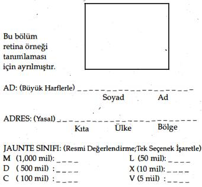

Eski Motorlu Taşıtlar Bürosu, bu yeni işi üstlenerek jaunte adaylarını düzenli olarak sınavlara sokup sınıflandırıyordu. Amerikan Otomobil Derneği' adının baş harflerini A.J.D.'ye çevirdi.
Birçok uzman ve aptal denediği halde, bütün çabalara rağmen kimse uzayın boşluklarına jaunte'leyememişti. Helmut Grant, aydaki bir jaunte platformunun koordinatlarını ezberlemek ve Times Meydanı'ndan Kepler Şehri'ne iki yüz kırk bin millik mesafenin her milini gözünde canlandırmak için bir ay harcamıştı. Grant jaunte'ledi ve ortadan yok oldu. Onu bir daha hiç bulamadılar. Ayrıca cenneti arayan Los Angeles'lı din adamı Enzio Dandridge'i, meta-boyutları aramak için uzayın derinliklerine jaunte'lemeyi denemeyecek kadar akıllı olması gereken parafizikçi Jacob Maria Freundlich'i, adı kötüye çıkmış
profesyonel bir arayıcı olan Gemiparçalayıcı Cogan'ı ve diğer yüzlerce insanı; kaçıkları, sinir hastalarını, kaçmakta çözüm arayanları ve intihar edenleri de bulamadılar. Uzay, teletaşıma-ya kapalıydı. Jaunte'leme, güneş sisteminin gezegenleriyle sınırlıydı.
Ama üç nesil içinde bütün güneş sistemi jaunte'lemeye .geçmişti. Bu seferki geçiş, dört yüzyıl önceki at arabasından benzin çağına geçişten çok daha görkemliydi. Üç gezegen ve sekiz uyduda var olan sosyal, yasal ve ekonomik yapılar yıkılırken hızla yerlerine evrensel jaunte'lemenin gerektirdiği yeni gelenek ve yasalar geçiyordu.
Jaunte'leyen yoksulların kenar mahalleleri terk edip çiftlik hayvanlarına ve vahşi doğaya saldırdıkları ova ve ormanlarda dolaşmaya başlamalarıyla toprak isyanları başgösterdi. Ev ve büro inşaatlarında da devrim oldu, şirketler jaunte'leme yoluyla kanunsuz girişleri önlemek için piyasaya labirentler ve maskeleme aygıtları sürmek zorunda kaldı. Jaunte öncesi endüstriler çökerken iflaslar, panikler, grevler ve açlıklar yaşandı.
Jaunte'leyen serseriler savunmasız ülkelere mikrop ve haşarat taşıdıkça salgın hastalıkların önü alınamaz oldu. Sıtma, fil hastalığı ve kemikkıran ateşi kuzeye, Grönland'a ulaştı ve üç yüzyıllık bir aradan sonra kuduz İngiltere'ye döndü. Veba, kızıl, humma, sarılık dünyanın her köşesine yayıldı, uzun zaman önce kökü kurutuldu sanılan cüzzam da Borneo'daki unutulmuş bir pislik yuvasından yeniden yayıldı.
Yeraltı örgütleri geceleri hiç durmaksızın jaunte'lemeye başlayınca gezegen ve uyduları suç dalgaları kapladı; polis onlarla acımasızca mücadele ettikçe de gaddarlıklar sergileniyordu. Toplum jaunte'lemenin cinsel ve ahlaki tehlikelerine protokol ve tabuyla karşılık vermeye başlayınca Viktoria devrinin en kötü iffet taslamalarına korkunç bir dönüş yaşandı. İç Gezegenler olarak bilinen Venüs, Terra ve Mars ile Dış Uydular arasında |eletaşımanm ekonomik ve politik baskılarından doğan acımasız ve şiddetli bir savaş patlak verdi.
Jaunte çağına gelene dek, üç İç Gezegen (ve Ay) ile insanların yerleşmiş olduğu, Jüpiter'in uyduları Io, Europa, Ganymede ve Callisto; Satürn'ün uyduları Rhea ve Titan ile Neptün'ün uydusu Lassell'den oluşan 7 uydu hassas bir ekonomik denge içindeydi. Birleşmiş Dış Uydular, İç Gezegenlerdeki üretim fabrikaları için hammadde; işlenmiş ürünler için de pazar sağlıyordu. On yıl gibi bir süre içinde denge jaunte'leme tarafından yıkıldı.
Temelde kaba ve yeni dünyalar olan Dış Uydular, İ.G.'in ulaşım ürünlerinin yüzde yetmişini satın almıştı. Jaunte'leme buna son verdi. İ.G. iletişim ürünlerinin de yüzde doksanını da Dış Uydular almıştı. Jaunte'leme buna da son verdi. Tabii buna bağlı olarak İç Gezegenler de Dış Uydular'dan hammadde satın alımına son verdi.
Ticari alışverişin yıkılmasıyla ekonomik savaşın, sıcak savaşa dönüşmesi kaçınılmazdı. İç Gezegenler'deki karteller, kendilerini rekabetten korumaya çalışarak Dış Uydular'a üretim malzemeleri göndermeyi reddetti. D.U., dünyalarında çalışmalara başlamış olan İç Gezegenle'e ait firmalara el koydu,patent anlaşmalarını bozdu, telif hakları şartlarına aldırmadı ...ve savaş başladı.
Hilkat garibeleri, canavarlar ve ucubelerle dolu bir çağdı. Tüm dünyalar muhteşem ve kinci bir mantıkla şekillenmişti. Yirmi dördüncü yüzyıldan1 nefret eden Klasikler ve Romantikler, onun potansiyel önemini fark etmiyordu. Evrimin katı bir gerçeğini göremiyorlardı ... gelişimin, karşıt uçların çatışmalı birleşiminden,en çılgınların evliliğinden doğduğunu. Klasikler de Romantikler de Güneş Sistemi'nin, insanı tamamen değiştirecek ve evrenin efendisi yapacak bir patlamanın eşiğinde olduğunun farkında değildi.
İşte Gulliver'Foyle'ın intikam dolu hikâyesi yirmi dördüncü yüzyılın bu kaynayan ortamında başladı.
1.- Yıldız/ar Hedefim'de A.B., bu tarihi ve olayların geçtiği zaman birimini "yirmi beşinci yüzyıl" olarak değiştirmiş. yhn